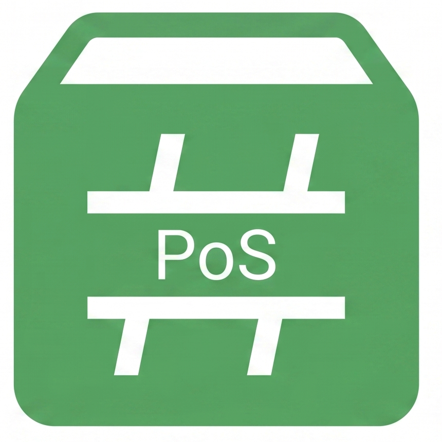
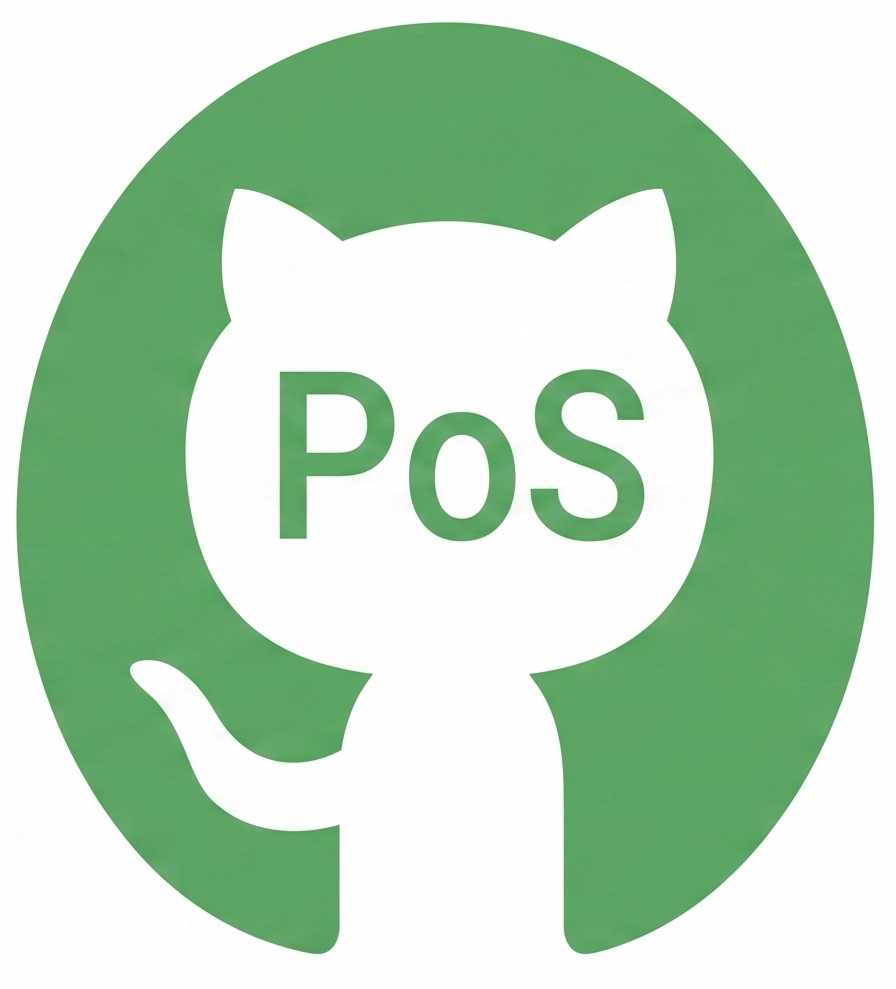

PosSharp API Documentation

Welcome to the PosSharp API documentation. This library provides a modern, reactive, and platform-agnostic framework for UPOS (UnifiedPOS) device development in .NET.
Quick Links

NuGet: Get the latest version.
GitHub: Source code and issues.- API Reference: Explore the namespaces, classes, and interfaces.
Key Features
- Reactive State Management: Built on top of R3 for powerful state synchronization.
- Platform Agnostic: Pure C# abstractions independent of specific SDKs.
- UPOS Compliance: Designed to follow the UnifiedPOS specification closely.
For detailed migration guides and compliance information, please refer to the original documentation in the docs/ folder.